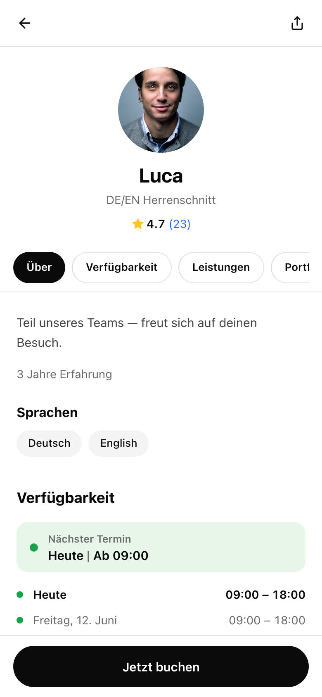
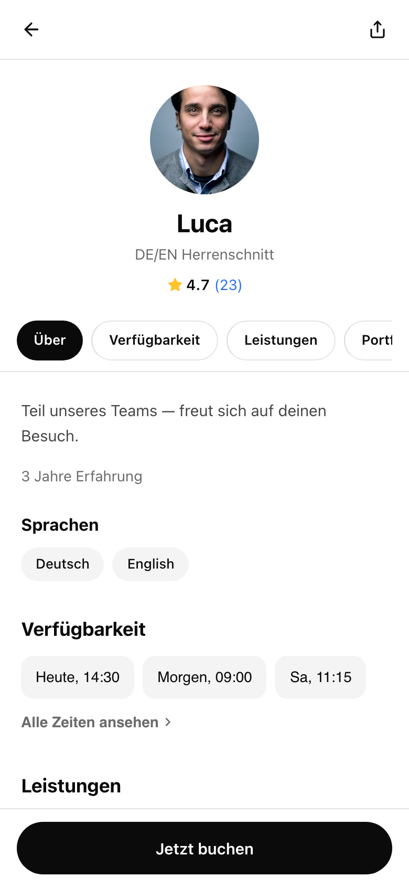
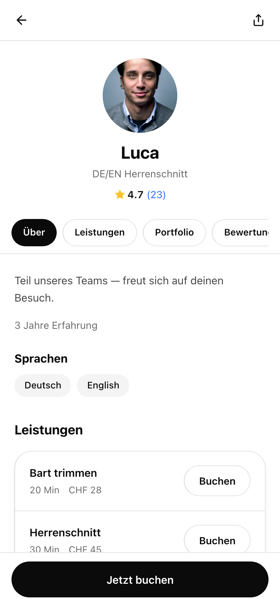
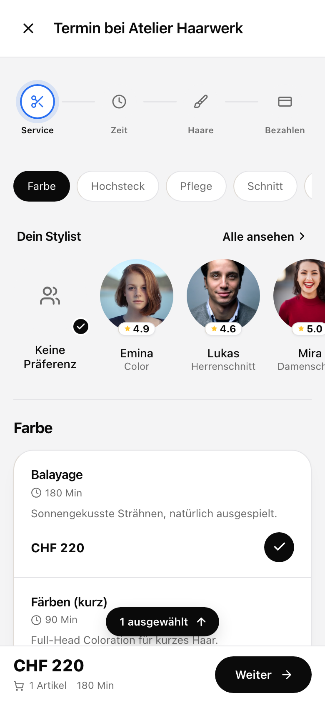
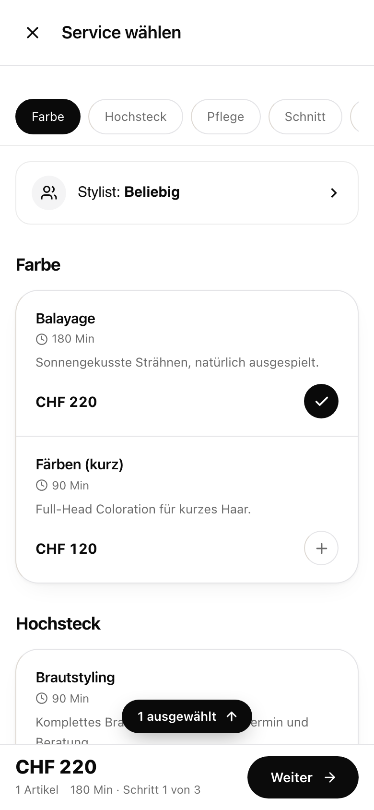
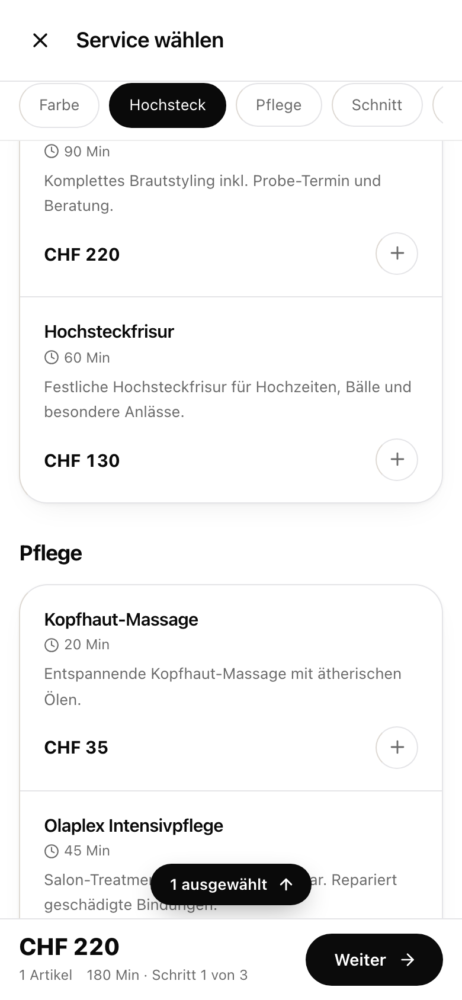
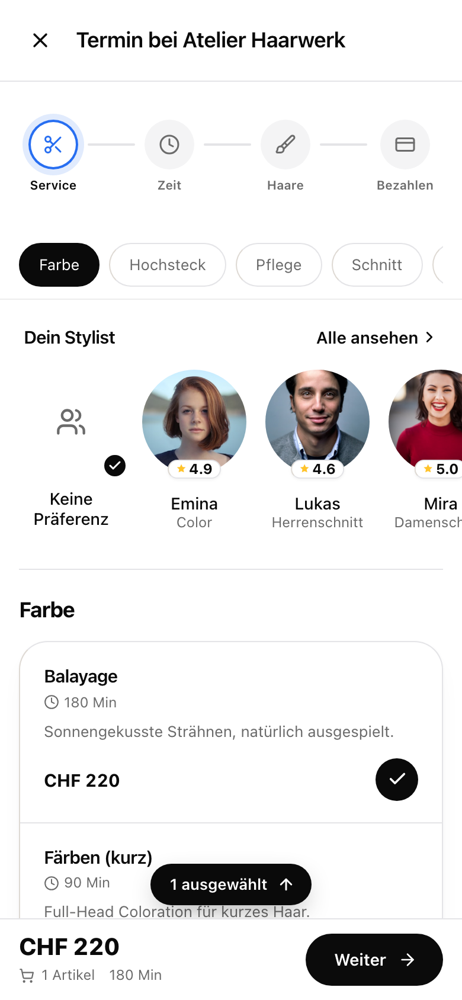

BEFORE current (rejected)

Green box + 7-day schedule rows.
All frames are the REAL pages (old-town-barbers / atelier-haarwerk) modified in-browser, 390×844. Council (Opus + Grok) verdicts: staff availability should be next bookable SLOTS, not a weekly schedule (Fresha shows no availability on employee profiles at all); booking step 1's clutter = the stepper + too many surface tiers.
BEFORE current (rejected)

Green box + 7-day schedule rows.
A1 · COUNCIL PICK slot chips

3 next bookable slots as flat chips → tap books Luca at that time. "Alle Zeiten ansehen" → date picker. No green box, no schedule.
A2 section removed (pure Fresha)

No availability on the profile at all — it lives in the booking date picker, exactly like Fresha.
BEFORE current (rejected)

Stepper + grey body + staff strip + categories.
B1 · COUNCIL PICK no stepper, white, collapsed stylist

Stepper removed on step 1 only (stays on Zeit/Haare/Bezahlen). White body. Stylist = one row → opens picker sheet. Progress "Schritt 1 von 3" in the bottom bar.
B1b B1 scrolled

Pill bar sticks white with hairline; grouped cards unchanged.
B2 minimal — keep stepper, white body only

Everything stays (stepper, staff faces, title), only the grey patchwork goes white. One-line change.